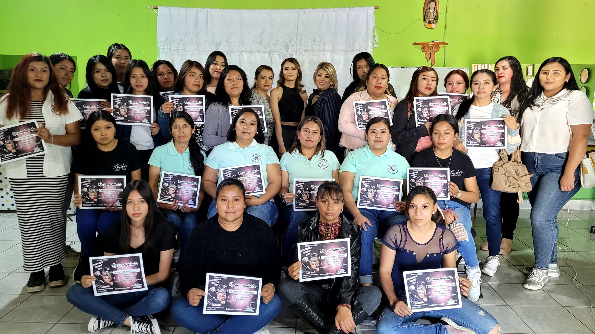

Quiénes somos
Somos una academia que lleva trabajando más de 15 años en Colón Queretaro. Quien imparte las clases es la Maestra Gabriela Hernández Resendiz, quien inicio sus estudios en el Municipio de Ezequiel Montes y al culminar empezó a impartir las clases en Colón.
Actualmente la Academia esta abalada por la SEP y CONOCER. El significado del nombre "Talita Kumi" es "Niña levantate", esto se da a raíz de un fraude que se vivio al empezar a ejercer como maestra en una escuela externa a esta.
Qué enseñamos
- Primer Trimestre
- • Peinado
- • Teoría del cabello
- • Trenza decorada
- • Facial
- • Maquillaje de fantasía
- • Automaquillaje
- • Cortes fase 1
- • Flecos
- • Diseño de cejas
- Segundo trimestre
- • Colorimetría
- • Permacologia
- • Extensiones artificiales
- • Peinado fase 2
- • Manicure
- • Pedicure
- Tercer trimestre
- • Cortes de dama fase 2
- • Fleco fase 2
- • Maquillaje fase 2 método lococo
- • Colorimetría fase 2
- • Permacologia fase 2
- • Peinado fase 3
- • Aplicación de uñas con tip
- Cuarto trimestre
- • Extensiones artificiales
- • Maquillaje corporal
- • Aclaraciones
- • Depilación
- • Alto peinado
- • Aplicación de uñas fase 2
- • Mano alzada
- Quinto trimestre
- • Maquillaje fase 3 técnicas universales
- • Corte de hombre
- • Cortes en seco
- • Colorimetría fase 3
- • Uñas esculturales fase 3 tercera dimensión
- • Gota de arte
- • Técnicas de aplicación
- Sexto trimestre
- • Masaje corporal
- • Acripie con pedicure
- • Planchado permanente de cabello
- • Planchado permanente de ceja
- • Rizado permanente de pestañas
- • Trabajo final
Ubicación
Calle Guanajuato #54, Colonia Las Fronteras, Colón, Querétaro
Redes de contacto